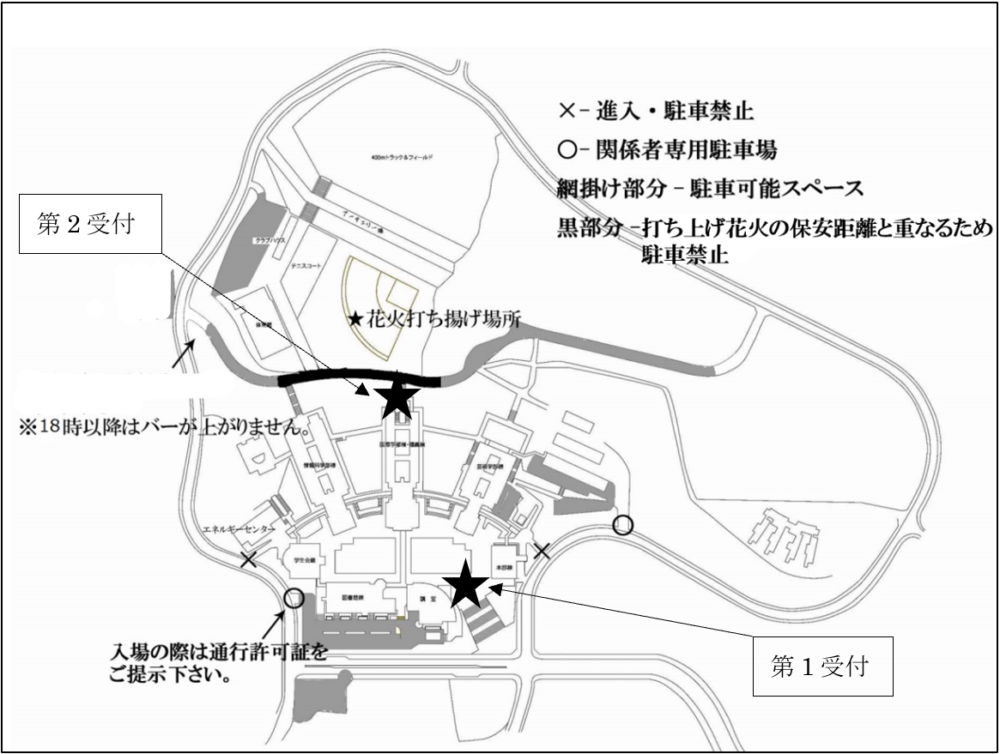
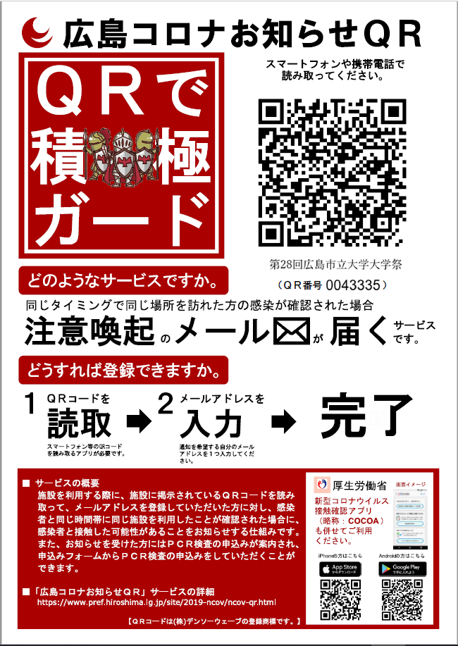

再起
概要
今回で第28回となる広島市立大学の大学祭。
開催日時：10/31(日) 10:00 ~ 21:00
学内団体による出店やステージ発表、学生による作品販売などを行います。
今年度は学内限定開催（本学関係者、OBOG（クラブ関係者、ホームカミングデー参加者））となります。
食堂
営業時間：11:30 ~ 13:30
座席は終日飲食場所として開放します。
当日メニュー
・カレー・うどん・唐揚げ・フライドポテト・焼きそば
・アメリカンドッグ・揚げたこ焼き・焼き鳥・お好み焼き串・アイス
価格は全て300円です。
食堂は
食堂前売り券をお持ちの方は開催当日、食堂の営業時間内に必ずお使いください。
（前売り券の払い戻しは行いません。）
ご注意
ご来場された方は受付を必ず済ませてください。
食事は食堂内のみとさせていただき、指定場所以外での食事を見かけた場合はスタッフがお声かけさせていただきます
17時頃からは大学祭実行委員会によるお弁当の販売もあります。
（数量には限りがあります。食堂前売り券はお使いいただけません。）
開催当日は多くのゴミが出ることが予想されます。分別のご協力をお願いします。
お車で来場される一般の方は「第１駐車場」「構内道路駐車場」「体育館裏駐車場」を開放しております。（以下地図の網掛け部分となります。）
参加者の方は下記QRコードから事前の登録をお願いします。
 コロナ禍のなか、この２年で大学生はたくさんのものを失いました。普通なら経験するはずだったたくさんのこと、普通なら出会うはずだったたくさんの人々、 普通なら得ることが出来たたくさんのチャンス。私たちはこの２年間、「普通」ではない生活を強いられています。このような状況から立ち上がるすべての大学 生にとって、「再起」は目標となるべき言葉だと考えています。大学祭実行委員会も昨年度大学祭の開催を断念するという苦渋の決断を下し、２年越しの願いが 叶った第２８回大学祭となります。短い時間ではありますが、普段の大学生活とは違う特別な非日常を味わうことができる１日です。私たちは大学生が再び輝く 場所を用意したいという強い願いとともに準備を続けてきました。もちろん主役はみなさん大学生です。みなさんそれぞれが輝ける場所で、十人十色の輝きを見 せてくれることを期待しています。
テーマ考案者 橋本祐我